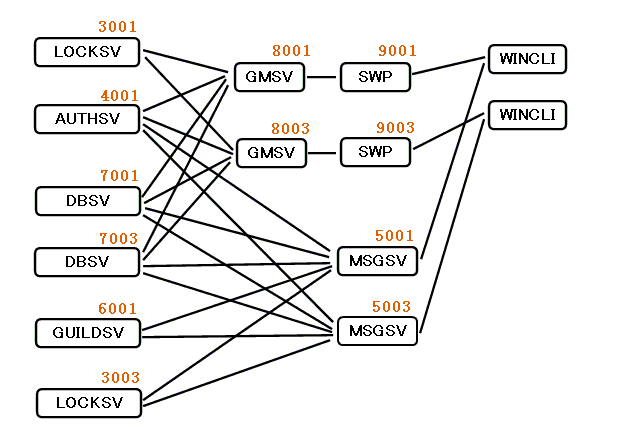

tester
Testing mm-suite servers
Test programs included in mm-suite package is assuming
that servers are connected to each other as shown by following figure:

Numbers in this figure shows you what port will be used by the server
for listening.
Basic operation of the tester program
A process of test program may have many TCP connections to
many GMSVs. They will send some protocol commands according to
pre-set test menu .
Test program is put on the same layer as a normal game client( like wincli).
You can perform a high-load test by using a lot of tester processes
at the same time.
Test menu
In mm-suite package, test programs are put in "tester" directory.
Each test program uses their own pattern to connect to
server, and perform testing. They will send protocol commands ( gameproto)
to GMSV sequentially, and prints out some information,
for examle,
how many queries are processed by the GMSV in a second.
When you try to perform the test, it will be useful
to use "pseudo-target" described in Makefile in "tester" directory.
For example, you will use such command line:
shell% make do_ping_test
Then make will perform a sequence of testing as described in
Makefile. You have to check all services are already running
before starting the test.
Here, all test programs included in "tester" directory are listed below:
- ping_test : Measure response latency time of GMSV
Measure round trip time and query/second between
client(tester) program and GMSV.
ping_test CONN_NUM PING_PER_CONN SWP_ADDR
ping_test 10 1000 localhost:9001
- CONN_NUM is number of connections.
ping_test will make this number of TCP connections to a SWP
after starting up, and then begin testing.
- PING_PER_CONN is number of "ping" protocol commands
per TCP connection. "ping_test" will know the test is succeeded
if all "ping" request is returned from the GMSV.
- SWP_ADDR is a combination of
IP address and port of SWP server.
For example, it will be formed like: "192.168.1.200:9001"
If you want to test another SWP, you have to start another
"ping_test" program.
By using "ping_test" program, you can test GMSV's pure
response(round-trip) time.
- auth_test : Test AUTHSV
Test AUTHSV functions. Create user, Delete user, and do
"check_password" protocol command of gameproto.
It also measures query/second.
auth_test CONN_NUM CREATE_PER_CONN SWP_ADDR
auth_test 10 100 localhost:9001
- CONN_NUM is number of TCP connections used at the
same time. "auth_test" creates this number of TCP connections
to SWP first, and then begins testing.
- CREATE_PER_CONN is number of users created
in each TCP connections.
- SWP_ADDR is a combination of IP address and port number
of SWP server. It's combined by ":" letter. For example,
"192.168.1.200:9001".
If you want to test through another SWP, you have to start
another "auth_test" program.
- storage_test : Test DBSV
Test DBSV functions. Use fictional user ID and password
when creating and deleting user.
storage_test TEST_COUNT SWP_ADDR
storage_test 40 localhost:9001
- TEST_COUNT is number of times of testing.
"storage_test" creates this number of characters
per user, so this number have to be smaller than
"max number of characters per user" configuration.
- SWP_ADDR is a combination of IP address and port number
of a SWP server, just same as "ping_test".
"storage_test" program uses "authsv", "locksv", and "dbsv" services
after all.
- lock_test : Test LOCKSV
Test LOCKSV user locking function.
lock_test SWP_ADDR USER_ID expect_ok|expect_ng
lock_test localhost:9001 P389559 expect_ok
lock_test localhost:9001 P389559 expect_ng
- SWP_ADDR a combination of IP address and port number of
a SWP server, just same as "ping_test".
- USER_ID is a user ID used when testing.
LOCKSV have to deny a user to get a lock twice.
- expect_ok|expect_ng
You specify these strings LITERALLY.
This test is a bit different from other test programs.
You use "lock_test" in two different terminals,
and check LOCKSV is working well.
terminal 1: lock_test localhost:9001 P123456 expect_ok
terminal 2: lock_test localhost:9001 P123456 expect_ng
"localhost 9001" can differ from each other if each GMSV/SWP is
using the same LOCKSV (default mm-suite case).
The point is that the user "P123456" can not get the "lock"
when tested in terminal 2 (second time).
"lock_test" returns ERROR if "expect_ng" is set and the user
"P123456" has got the lock.
Return to INDEX
Copyright 2000-2005 CommunityEngine Inc. All rights reserved.